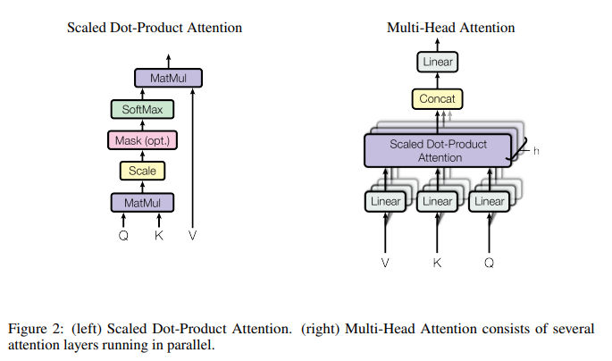
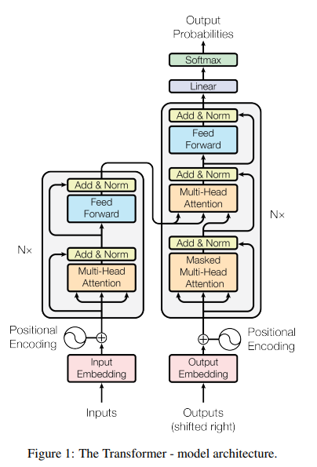
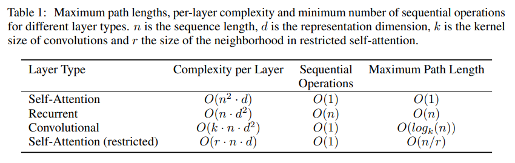
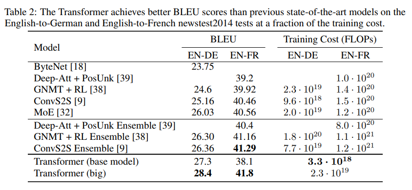
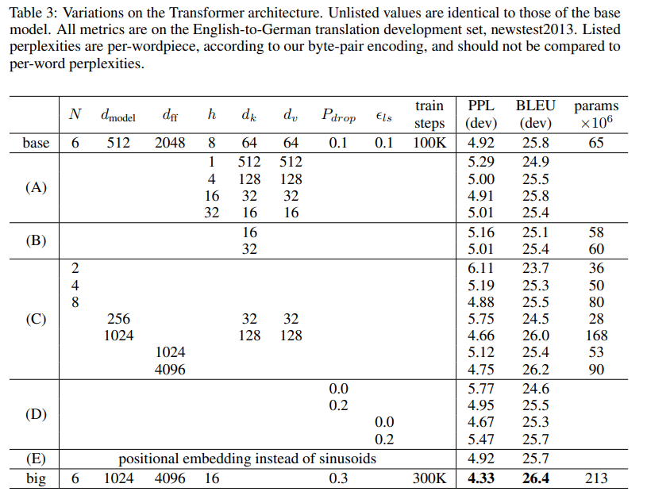

Attention_1. Attention Is All You Need
Introduction
This paper only uses attention without any RNN or CNN architectures. For many prior works, they used RNN, however, this sequential nature limits parallelization within training examples, so that it is critical at longer sequence length. Thus we rely on only an attention to draw global dependencies between input and output. Since single-head attention average attention-weight, so we use multi-head attention.

Architecture

At decoder, to prevent positions from attending to subsequent positions, we use masking(set scaled dot product attention as ).
If query or key dimension() grows large, then the dot products grow, pushing the softmax function into regions where it has extreme small gradients. So we divide attention distribution by . Multi-head attention allows the model to jointly attend to information from different representation subspaces at different positions.
FFN layer consists two linear transformations with a ReLU activation between.
Since transformer has no recurrence and no convolution, so we must inject some information about the position of tokens(positional encoding).
Since can be represented as a linear transformation(by using Trigonometric addition formulas) of , It would allow the model to easily learn the positions.
Why Self-attention?

If the sequence length n is smaller than the representation dimensionality d, then self-attention is faster than recurrent layer(according to this paper, most often case). To improve computational performance for very long sequences, self-attention could be restricted to a neighborhood of size r. We can see this issues at early GPT model, it has input limit.Experiments


We used beam search, where beam search is for K, we infer K first words, and then for each K words re-infer most available K words, and so on.